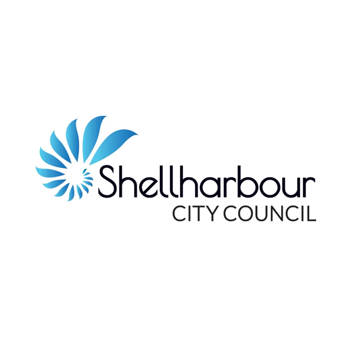
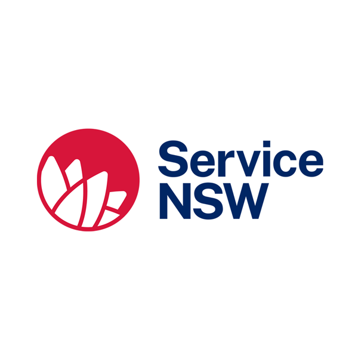

You Don't Have to Figure It Out Alone
Between the council, state government, and the SHBNG community, there's more support available to Shellharbour businesses than most people realise. Here's where to start.

Shellharbour City Council — Economic Development
The council's Economic Development Unit supports local businesses with advice, connections, and partnerships. They run free one-hour business consultations in partnership with Service NSW and Sarina Russo Entrepreneurs — covering everything from funding access to business planning and compliance.
Visit Council Business Page
Service NSW Business Bureau
Free, personalised business support from the NSW Government. The Business Bureau helps with licences and permits, navigating government programs, finding grants and funding, NSW Government procurement opportunities, and specialist support for women, multicultural, and First Nations business owners.
Book a Free ConsultationShellharbour & Beyond Networking Group
The fastest way to tap into the local business community. Our monthly networking mornings bring together business owners, professionals, and community leaders from across the Shellharbour region. First visit is always free — come and see what it's about.
See the Next Event